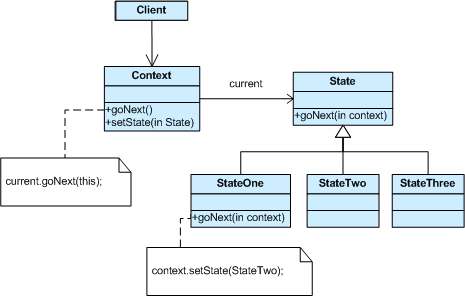

State Pattern
Originally published 2016-08-15 · Boris Ivanov
1. Usage
- Allow an object to change behavior when State changed.
- implements OOP Final State Machine(FSM)
2. UML class diagram

- Context is wrapper class - interface to state
- Define abstract state base class
- Define state specific behavior in derived state classes
- maintain pointer to current state in wrapper context class
3. Pros
- Easier to extend with new states by adding a new object
- Easier to assure that all signals are treated by the states, since the base class should define the signals as abstract functions.
- Easier to extend a particular states behavior by deriving from the state. The state pattern should put a particular states behavior in one object.
4. Cons
- More difficult to see all states and their relations by looking at code, since they are dispersed among several different classes.
- Could end up creating an unmanageable number of objects. But compare this to the corresponding if/else blocks needed with the corresponding ENUM solution.
5. Source code
/*
From https://sourcemaking.com/design_patterns/state/cpp/1
*/
#include <iostream>
using namespace std;
class Machine
{
class State *current;
public:
Machine();
void setCurrent(State *s)
{
current = s;
}
void on();
void off();
};
class State
{
public:
virtual void on(Machine *m)
{
cout << " already ON\n";
}
virtual void off(Machine *m)
{
cout << " already OFF\n";
}
};
void Machine::on()
{
current->on(this);
}
void Machine::off()
{
current->off(this);
}
class ON: public State
{
public:
ON()
{
cout << " ON-ctor ";
};
~ON()
{
cout << " dtor-ON\n";
};
void off(Machine *m);
};
class OFF: public State
{
public:
OFF()
{
cout << " OFF-ctor ";
};
~OFF()
{
cout << " dtor-OFF\n";
};
void on(Machine *m)
{
cout << " going from OFF to ON";
m->setCurrent(new ON());
delete this;
}
};
void ON::off(Machine *m)
{
cout << " going from ON to OFF";
m->setCurrent(new OFF());
delete this;
}
Machine::Machine()
{
current = new OFF();
cout << \n;
}
int main()
{
void(Machine::*ptrs[])() = { Machine::off, Machine::on };
Machine fsm;
int num;
while (1)
{
cout << "Enter 0/1: ";
cin >> num;
(fsm.*ptrs[num])();
}
}